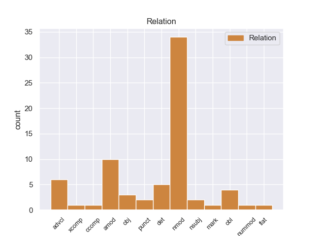
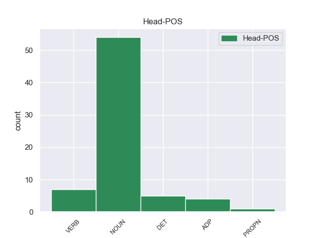
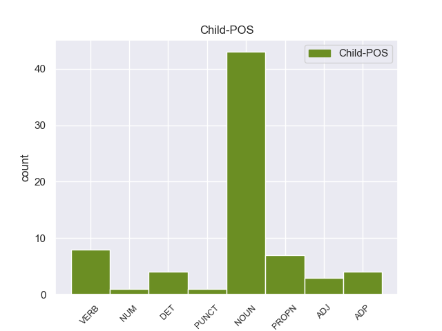

Distribution of features within this leaf



Agreement Rules sorted by frequency.
- When the dependent token is the nominal modifier(nmod) of the head token, and the dependent token is NOUN.
1 Polomé _ _ _ _ 0 _ _ _
2 propone _ _ _ _ 0 _ _ _
3 que _ _ _ _ 0 _ _ _
4 la _ _ _ _ 0 _ _ _
5 palabra _ _ _ _ 0 _ _ _
6 pertenecía _ _ _ _ 0 _ _ _
7 a _ _ _ _ 0 _ _ _
8 el _ _ _ _ 0 _ _ _
9 « _ _ _ _ 0 _ _ _
10 vocabulario vocabulario NOUN _ Mood=Ind|Number=Sing|Person=3|Tense=Past|VerbForm=Fin 24 nmod _ _
11 técnico _ _ _ _ 0 _ _ _
12 y _ _ _ _ 0 _ _ _
13 operativo _ _ _ _ 0 _ _ _
14 » _ _ _ _ 0 _ _ _
15 de _ _ _ _ 0 _ _ _
16 los _ _ _ _ 0 _ _ _
17 pueblos _ _ _ _ 0 _ _ _
18 germánicos _ _ _ _ 0 _ _ _
19 , _ _ _ _ 0 _ _ _
20 y _ _ _ _ 0 _ _ _
21 que _ _ _ _ 0 _ _ _
22 originalmente _ _ _ _ 0 _ _ _
23 se _ _ _ _ 0 _ _ _
24 refería refería NOUN _ Mood=Ind|Number=Sing|Person=3|Tense=Past|VerbForm=Fin 0 _ _ _
25 a _ _ _ _ 0 _ _ _
26 el _ _ _ _ 0 _ _ _
27 « _ _ _ _ 0 _ _ _
28 estado _ _ _ _ 0 _ _ _
29 mental _ _ _ _ 0 _ _ _
30 de _ _ _ _ 0 _ _ _
31 éxtasis _ _ _ _ 0 _ _ _
32 producido _ _ _ _ 0 _ _ _
33 por _ _ _ _ 0 _ _ _
34 una _ _ _ _ 0 _ _ _
35 bebida _ _ _ _ 0 _ _ _
36 potente _ _ _ _ 0 _ _ _
37 » _ _ _ _ 0 _ _ _
38 usada _ _ _ _ 0 _ _ _
39 en _ _ _ _ 0 _ _ _
40 los _ _ _ _ 0 _ _ _
41 rituales _ _ _ _ 0 _ _ _
42 de _ _ _ _ 0 _ _ _
43 el _ _ _ _ 0 _ _ _
44 paganismo _ _ _ _ 0 _ _ _
45 germánico _ _ _ _ 0 _ _ _
46 . _ _ _ _ 0 _ _ _
1 El _ _ _ _ 0 _ _ _
2 sector _ _ _ _ 0 _ _ _
3 manufacturero _ _ _ _ 0 _ _ _
4 , _ _ _ _ 0 _ _ _
5 que _ _ _ _ 0 _ _ _
6 había _ _ _ _ 0 _ _ _
7 sido _ _ _ _ 0 _ _ _
8 el _ _ _ _ 0 _ _ _
9 gran _ _ _ _ 0 _ _ _
10 creador _ _ _ _ 0 _ _ _
11 de _ _ _ _ 0 _ _ _
12 empleos _ _ _ _ 0 _ _ _
13 en _ _ _ _ 0 _ _ _
14 el _ _ _ _ 0 _ _ _
15 comienzo _ _ _ _ 0 _ _ _
16 de _ _ _ _ 0 _ _ _
17 la _ _ _ _ 0 _ _ _
18 reactivación _ _ _ _ 0 _ _ _
19 , _ _ _ _ 0 _ _ _
20 perdió perder VERB _ Mood=Ind|Number=Sing|Person=3|Tense=Past|VerbForm=Fin 0 _ _ _
21 el _ _ _ _ 0 _ _ _
22 mes _ _ _ _ 0 _ _ _
23 pasado _ _ _ _ 0 _ _ _
24 7.000 _ _ _ _ 0 _ _ _
25 empleos _ _ _ _ 0 _ _ _
26 , _ _ _ _ 0 _ _ _
27 mientras _ _ _ _ 0 _ _ _
28 que _ _ _ _ 0 _ _ _
29 el _ _ _ _ 0 _ _ _
30 sector _ _ _ _ 0 _ _ _
31 de _ _ _ _ 0 _ _ _
32 minería _ _ _ _ 0 _ _ _
33 y _ _ _ _ 0 _ _ _
34 maderero _ _ _ _ 0 _ _ _
35 ganó ganar VERB _ Mood=Ind|Number=Sing|Person=3|Tense=Past|VerbForm=Fin 20 advcl _ _
36 7.000 _ _ _ _ 0 _ _ _
37 puestos _ _ _ _ 0 _ _ _
38 de _ _ _ _ 0 _ _ _
39 trabajo _ _ _ _ 0 _ _ _
40 . _ _ _ _ 0 _ _ _
1 Lucanus lucanus PROPN _ Mood=Ind|Number=Sing|Person=3|Tense=Pres|VerbForm=Fin 0 _ _ _
2 placidus placidus NOUN _ Mood=Ind|Number=Sing|Person=3|Tense=Pres|VerbForm=Fin 1 amod _ _
3 es _ _ _ _ 0 _ _ _
4 una _ _ _ _ 0 _ _ _
5 especie _ _ _ _ 0 _ _ _
6 de _ _ _ _ 0 _ _ _
7 coleóptero _ _ _ _ 0 _ _ _
8 de _ _ _ _ 0 _ _ _
9 la _ _ _ _ 0 _ _ _
10 familia _ _ _ _ 0 _ _ _
11 Lucanidae _ _ _ _ 0 _ _ _
12 . _ _ _ _ 0 _ _ _
1 Un _ _ _ _ 0 _ _ _
2 año _ _ _ _ 0 _ _ _
3 después _ _ _ _ 0 _ _ _
4 , _ _ _ _ 0 _ _ _
5 el _ _ _ _ 0 _ _ _
6 sucesor _ _ _ _ 0 _ _ _
7 de _ _ _ _ 0 _ _ _
8 el _ _ _ _ 0 _ _ _
9 Déspota _ _ _ _ 0 _ _ _
10 de _ _ _ _ 0 _ _ _
11 Serbia _ _ _ _ 0 _ _ _
12 Đurađ _ _ _ _ 0 _ _ _
13 Branković branković PROPN _ Mood=Ind|Number=Sing|Person=3|Tense=Pres|VerbForm=Fin 15 nmod _ _
14 se _ _ _ _ 0 _ _ _
15 convirtió convirtió NOUN _ Mood=Ind|Number=Sing|Person=3|Tense=Pres|VerbForm=Fin 0 _ _ _
16 en _ _ _ _ 0 _ _ _
17 Señor _ _ _ _ 0 _ _ _
18 de _ _ _ _ 0 _ _ _
19 Baia _ _ _ _ 0 _ _ _
20 Sprie _ _ _ _ 0 _ _ _
21 . _ _ _ _ 0 _ _ _
1 Sabía _ _ _ _ 0 _ _ _
2 dónde _ _ _ _ 0 _ _ _
3 había _ _ _ _ 0 _ _ _
4 estado _ _ _ _ 0 _ _ _
5 y _ _ _ _ 0 _ _ _
6 dónde _ _ _ _ 0 _ _ _
7 estaba _ _ _ _ 0 _ _ _
8 , _ _ _ _ 0 _ _ _
9 a _ _ _ _ 0 _ _ _
10 mí _ _ _ _ 0 _ _ _
11 nunca _ _ _ _ 0 _ _ _
12 me _ _ _ _ 0 _ _ _
13 contó _ _ _ _ 0 _ _ _
14 detalles _ _ _ _ 0 _ _ _
15 de _ _ _ _ 0 _ _ _
16 lo _ _ _ _ 0 _ _ _
17 que _ _ _ _ 0 _ _ _
18 había _ _ _ _ 0 _ _ _
19 vivido _ _ _ _ 0 _ _ _
20 ahí _ _ _ _ 0 _ _ _
21 adentro _ _ _ _ 0 _ _ _
22 , _ _ _ _ 0 _ _ _
23 lo _ _ _ _ 0 _ _ _
24 que _ _ _ _ 0 _ _ _
25 sí _ _ _ _ 0 _ _ _
26 me _ _ _ _ 0 _ _ _
27 contó contó NOUN _ Mood=Ind|Number=Sing|Person=3|Tense=Past|VerbForm=Fin 0 _ _ _
28 es _ _ _ _ 0 _ _ _
29 que _ _ _ _ 0 _ _ _
30 lo _ _ _ _ 0 _ _ _
31 habían _ _ _ _ 0 _ _ _
32 torturado _ _ _ _ 0 _ _ _
33 delante _ _ _ _ 0 _ _ _
34 de _ _ _ _ 0 _ _ _
35 su _ _ _ _ 0 _ _ _
36 madre _ _ _ _ 0 _ _ _
37 para _ _ _ _ 0 _ _ _
38 que _ _ _ _ 0 _ _ _
39 ella _ _ _ _ 0 _ _ _
40 diera diera NOUN _ Mood=Ind|Number=Sing|Person=3|Tense=Past|VerbForm=Fin 27 obj _ _
41 los _ _ _ _ 0 _ _ _
42 datos _ _ _ _ 0 _ _ _
43 de _ _ _ _ 0 _ _ _
44 una _ _ _ _ 0 _ _ _
45 hipoteca _ _ _ _ 0 _ _ _
46 o _ _ _ _ 0 _ _ _
47 de _ _ _ _ 0 _ _ _
48 una _ _ _ _ 0 _ _ _
49 casa _ _ _ _ 0 _ _ _
50 que _ _ _ _ 0 _ _ _
51 tenían _ _ _ _ 0 _ _ _
52 . _ _ _ _ 0 _ _ _
1 " _ _ _ _ 0 _ _ _
2 La _ _ _ _ 0 _ _ _
3 vacuna vacuna ADP _ Mood=Ind|Number=Sing|Person=3|Tense=Pres|VerbForm=Fin 28 det _ _
4 contra _ _ _ _ 0 _ _ _
5 el _ _ _ _ 0 _ _ _
6 virus _ _ _ _ 0 _ _ _
7 de _ _ _ _ 0 _ _ _
8 papiloma _ _ _ _ 0 _ _ _
9 humano _ _ _ _ 0 _ _ _
10 o _ _ _ _ 0 _ _ _
11 VPH _ _ _ _ 0 _ _ _
12 ( _ _ _ _ 0 _ _ _
13 HPV _ _ _ _ 0 _ _ _
14 , _ _ _ _ 0 _ _ _
15 según _ _ _ _ 0 _ _ _
16 su _ _ _ _ 0 _ _ _
17 sigla _ _ _ _ 0 _ _ _
18 en _ _ _ _ 0 _ _ _
19 inglés _ _ _ _ 0 _ _ _
20 ) _ _ _ _ 0 _ _ _
21 es _ _ _ _ 0 _ _ _
22 esencial _ _ _ _ 0 _ _ _
23 en _ _ _ _ 0 _ _ _
24 esta _ _ _ _ 0 _ _ _
25 etapa _ _ _ _ 0 _ _ _
26 porque _ _ _ _ 0 _ _ _
27 se _ _ _ _ 0 _ _ _
28 coloca coloca DET _ Mood=Ind|Number=Sing|Person=3|Tense=Pres|VerbForm=Fin 0 _ _ _
29 a _ _ _ _ 0 _ _ _
30 niñas _ _ _ _ 0 _ _ _
31 de _ _ _ _ 0 _ _ _
32 11 _ _ _ _ 0 _ _ _
33 años _ _ _ _ 0 _ _ _
34 , _ _ _ _ 0 _ _ _
35 edad _ _ _ _ 0 _ _ _
36 en _ _ _ _ 0 _ _ _
37 la _ _ _ _ 0 _ _ _
38 que _ _ _ _ 0 _ _ _
39 , _ _ _ _ 0 _ _ _
40 se _ _ _ _ 0 _ _ _
41 calcula _ _ _ _ 0 _ _ _
42 , _ _ _ _ 0 _ _ _
43 aun _ _ _ _ 0 _ _ _
44 no _ _ _ _ 0 _ _ _
45 tuvieron _ _ _ _ 0 _ _ _
46 contacto _ _ _ _ 0 _ _ _
47 con _ _ _ _ 0 _ _ _
48 el _ _ _ _ 0 _ _ _
49 virus _ _ _ _ 0 _ _ _
50 . _ _ _ _ 0 _ _ _
1 Pero _ _ _ _ 0 _ _ _
2 empató _ _ _ _ 0 _ _ _
3 2 _ _ _ _ 0 _ _ _
4 a _ _ _ _ 0 _ _ _
5 2 _ _ _ _ 0 _ _ _
6 contra _ _ _ _ 0 _ _ _
7 Platense _ _ _ _ 0 _ _ _
8 con _ _ _ _ 0 _ _ _
9 un _ _ _ _ 0 _ _ _
10 escándalo _ _ _ _ 0 _ _ _
11 que _ _ _ _ 0 _ _ _
12 llevó llevó NOUN _ Mood=Ind|Number=Sing|Person=3|Tense=Pres|VerbForm=Fin 0 _ _ _
13 a _ _ _ _ 0 _ _ _
14 la _ _ _ _ 0 _ _ _
15 clausura _ _ _ _ 0 _ _ _
16 de _ _ _ _ 0 _ _ _
17 La _ _ _ _ 0 _ _ _
18 Bombonera _ _ _ _ 0 _ _ _
19 , _ _ _ _ 0 _ _ _
20 y _ _ _ _ 0 _ _ _
21 posteriormente _ _ _ _ 0 _ _ _
22 con _ _ _ _ 0 _ _ _
23 Rosario _ _ _ _ 0 _ _ _
24 Central _ _ _ _ 0 _ _ _
25 también _ _ _ _ 0 _ _ _
26 por _ _ _ _ 0 _ _ _
27 2 _ _ _ _ 0 _ _ _
28 a _ _ _ _ 0 _ _ _
29 2 _ _ _ _ 0 _ _ _
30 , _ _ _ _ 0 _ _ _
31 llegando _ _ _ _ 0 _ _ _
32 a _ _ _ _ 0 _ _ _
33 el _ _ _ _ 0 _ _ _
34 último _ _ _ _ 0 _ _ _
35 partido _ _ _ _ 0 _ _ _
36 con _ _ _ _ 0 _ _ _
37 un _ _ _ _ 0 _ _ _
38 solo _ _ _ _ 0 _ _ _
39 punto _ _ _ _ 0 _ _ _
40 de _ _ _ _ 0 _ _ _
41 diferencia diferencia NOUN _ Mood=Ind|Number=Sing|Person=3|Tense=Pres|VerbForm=Fin 12 obl _ _
42 sobre _ _ _ _ 0 _ _ _
43 River _ _ _ _ 0 _ _ _
44 . _ _ _ _ 0 _ _ _
1 Sin _ _ _ _ 0 _ _ _
2 embargo _ _ _ _ 0 _ _ _
3 , _ _ _ _ 0 _ _ _
4 aunque _ _ _ _ 0 _ _ _
5 utilizó _ _ _ _ 0 _ _ _
6 mazurcas _ _ _ _ 0 _ _ _
7 tradicionales _ _ _ _ 0 _ _ _
8 como _ _ _ _ 0 _ _ _
9 modelo _ _ _ _ 0 _ _ _
10 , _ _ _ _ 0 _ _ _
11 fue _ _ _ _ 0 _ _ _
12 capaz _ _ _ _ 0 _ _ _
13 de _ _ _ _ 0 _ _ _
14 transformar _ _ _ _ 0 _ _ _
15 sus _ _ _ _ 0 _ _ _
16 mazurcas _ _ _ _ 0 _ _ _
17 en _ _ _ _ 0 _ _ _
18 un _ _ _ _ 0 _ _ _
19 género _ _ _ _ 0 _ _ _
20 nuevo _ _ _ _ 0 _ _ _
21 por _ _ _ _ 0 _ _ _
22 completo _ _ _ _ 0 _ _ _
23 , _ _ _ _ 0 _ _ _
24 que _ _ _ _ 0 _ _ _
25 llegó llegar VERB _ Mood=Ind|Number=Sing|Person=3|Tense=Past|VerbForm=Fin 0 _ _ _
26 a _ _ _ _ 0 _ _ _
27 ser _ _ _ _ 0 _ _ _
28 conocido conocer VERB _ Gender=Masc|Number=Sing|Tense=Past|VerbForm=Part 25 xcomp _ _
29 como _ _ _ _ 0 _ _ _
30 un _ _ _ _ 0 _ _ _
31 « _ _ _ _ 0 _ _ _
32 género _ _ _ _ 0 _ _ _
33 de _ _ _ _ 0 _ _ _
34 Chopin _ _ _ _ 0 _ _ _
35 » _ _ _ _ 0 _ _ _
36 . _ _ _ _ 0 _ _ _
1 Durante _ _ _ _ 0 _ _ _
2 este _ _ _ _ 0 _ _ _
3 tiempo _ _ _ _ 0 _ _ _
4 me _ _ _ _ 0 _ _ _
5 he _ _ _ _ 0 _ _ _
6 hundido _ _ _ _ 0 _ _ _
7 en _ _ _ _ 0 _ _ _
8 la _ _ _ _ 0 _ _ _
9 problemática _ _ _ _ 0 _ _ _
10 de _ _ _ _ 0 _ _ _
11 la _ _ _ _ 0 _ _ _
12 zona _ _ _ _ 0 _ _ _
13 metropolitana _ _ _ _ 0 _ _ _
14 en _ _ _ _ 0 _ _ _
15 general _ _ _ _ 0 _ _ _
16 a _ _ _ _ 0 _ _ _
17 través _ _ _ _ 0 _ _ _
18 de _ _ _ _ 0 _ _ _
19 las _ _ _ _ 0 _ _ _
20 quejas _ _ _ _ 0 _ _ _
21 y _ _ _ _ 0 _ _ _
22 demandas _ _ _ _ 0 _ _ _
23 de _ _ _ _ 0 _ _ _
24 la _ _ _ _ 0 _ _ _
25 gente _ _ _ _ 0 _ _ _
26 , _ _ _ _ 0 _ _ _
27 y _ _ _ _ 0 _ _ _
28 me _ _ _ _ 0 _ _ _
29 preguntaba preguntar VERB _ Mood=Ind|Number=Sing|Person=3|Tense=Imp|VerbForm=Fin 0 _ _ _
30 en _ _ _ _ 0 _ _ _
31 qué _ _ _ _ 0 _ _ _
32 diablos _ _ _ _ 0 _ _ _
33 se _ _ _ _ 0 _ _ _
34 gastaban gastar VERB _ Mood=Ind|Number=Plur|Person=3|Tense=Imp|VerbForm=Fin 29 ccomp _ _
35 los _ _ _ _ 0 _ _ _
36 jefes _ _ _ _ 0 _ _ _
37 delegacionales _ _ _ _ 0 _ _ _
38 de _ _ _ _ 0 _ _ _
39 la _ _ _ _ 0 _ _ _
40 capital _ _ _ _ 0 _ _ _
41 sus _ _ _ _ 0 _ _ _
42 presupuestos _ _ _ _ 0 _ _ _
43 , _ _ _ _ 0 _ _ _
44 porque _ _ _ _ 0 _ _ _
45 los _ _ _ _ 0 _ _ _
46 beneficios _ _ _ _ 0 _ _ _
47 no _ _ _ _ 0 _ _ _
48 llegan _ _ _ _ 0 _ _ _
49 a _ _ _ _ 0 _ _ _
50 la _ _ _ _ 0 _ _ _
51 gente _ _ _ _ 0 _ _ _
52 . _ _ _ _ 0 _ _ _
1 En _ _ _ _ 0 _ _ _
2 el _ _ _ _ 0 _ _ _
3 caso _ _ _ _ 0 _ _ _
4 de _ _ _ _ 0 _ _ _
5 las _ _ _ _ 0 _ _ _
6 leguminosas _ _ _ _ 0 _ _ _
7 , _ _ _ _ 0 _ _ _
8 los _ _ _ _ 0 _ _ _
9 compuestos _ _ _ _ 0 _ _ _
10 antimicrobianos _ _ _ _ 0 _ _ _
11 de _ _ _ _ 0 _ _ _
12 la _ _ _ _ 0 _ _ _
13 clase _ _ _ _ 0 _ _ _
14 isoflavonoides _ _ _ _ 0 _ _ _
15 son _ _ _ _ 0 _ _ _
16 sintetizados _ _ _ _ 0 _ _ _
17 a _ _ _ _ 0 _ _ _
18 partir _ _ _ _ 0 _ _ _
19 de _ _ _ _ 0 _ _ _
20 L _ _ _ _ 0 _ _ _
21 - _ _ _ _ 0 _ _ _
22 fenilalanina _ _ _ _ 0 _ _ _
23 vía _ _ _ _ 0 _ _ _
24 una _ _ _ _ 0 _ _ _
25 serie _ _ _ _ 0 _ _ _
26 de _ _ _ _ 0 _ _ _
27 enzimas enzimas NOUN _ Mood=Ind|Number=Sing|Person=3|Tense=Pres|VerbForm=Fin 0 _ _ _
28 como _ _ _ _ 0 _ _ _
29 la _ _ _ _ 0 _ _ _
30 L _ _ _ _ 0 _ _ _
31 - _ _ _ _ 0 _ _ _
32 fenilalanina _ _ _ _ 0 _ _ _
33 - _ _ _ _ 0 _ _ _
34 amonialiasa _ _ _ _ 0 _ _ _
35 ( _ _ _ _ 0 _ _ _
36 PAL _ _ _ _ 0 _ _ _
37 ) _ _ _ _ 0 _ _ _
38 , _ _ _ _ 0 _ _ _
39 4 4 NUM _ Mood=Ind|Number=Sing|Person=3|Tense=Pres|VerbForm=Fin 27 amod _ _
40 - _ _ _ _ 0 _ _ _
41 coumarato _ _ _ _ 0 _ _ _
42 : _ _ _ _ 0 _ _ _
43 Coenzima _ _ _ _ 0 _ _ _
44 A _ _ _ _ 0 _ _ _
45 ligasa _ _ _ _ 0 _ _ _
46 ( _ _ _ _ 0 _ _ _
47 4CL _ _ _ _ 0 _ _ _
48 ) _ _ _ _ 0 _ _ _
49 y _ _ _ _ 0 _ _ _
50 chalcona _ _ _ _ 0 _ _ _
51 sintasa _ _ _ _ 0 _ _ _
52 ( _ _ _ _ 0 _ _ _
53 CHS _ _ _ _ 0 _ _ _
54 ) _ _ _ _ 0 _ _ _
55 que _ _ _ _ 0 _ _ _
56 controlan _ _ _ _ 0 _ _ _
57 pasos _ _ _ _ 0 _ _ _
58 importantes _ _ _ _ 0 _ _ _
59 en _ _ _ _ 0 _ _ _
60 las _ _ _ _ 0 _ _ _
61 sub _ _ _ _ 0 _ _ _
62 - _ _ _ _ 0 _ _ _
63 rutas _ _ _ _ 0 _ _ _
64 de _ _ _ _ 0 _ _ _
65 síntesis _ _ _ _ 0 _ _ _
66 . _ _ _ _ 0 _ _ _
1 En _ _ _ _ 0 _ _ _
2 el _ _ _ _ 0 _ _ _
3 caso _ _ _ _ 0 _ _ _
4 de _ _ _ _ 0 _ _ _
5 las _ _ _ _ 0 _ _ _
6 leguminosas _ _ _ _ 0 _ _ _
7 , _ _ _ _ 0 _ _ _
8 los _ _ _ _ 0 _ _ _
9 compuestos _ _ _ _ 0 _ _ _
10 antimicrobianos _ _ _ _ 0 _ _ _
11 de _ _ _ _ 0 _ _ _
12 la _ _ _ _ 0 _ _ _
13 clase _ _ _ _ 0 _ _ _
14 isoflavonoides _ _ _ _ 0 _ _ _
15 son _ _ _ _ 0 _ _ _
16 sintetizados _ _ _ _ 0 _ _ _
17 a _ _ _ _ 0 _ _ _
18 partir _ _ _ _ 0 _ _ _
19 de _ _ _ _ 0 _ _ _
20 L _ _ _ _ 0 _ _ _
21 - _ _ _ _ 0 _ _ _
22 fenilalanina _ _ _ _ 0 _ _ _
23 vía _ _ _ _ 0 _ _ _
24 una _ _ _ _ 0 _ _ _
25 serie _ _ _ _ 0 _ _ _
26 de _ _ _ _ 0 _ _ _
27 enzimas enzimas NOUN _ Mood=Ind|Number=Sing|Person=3|Tense=Pres|VerbForm=Fin 0 _ _ _
28 como _ _ _ _ 0 _ _ _
29 la _ _ _ _ 0 _ _ _
30 L _ _ _ _ 0 _ _ _
31 - _ _ _ _ 0 _ _ _
32 fenilalanina _ _ _ _ 0 _ _ _
33 - _ _ _ _ 0 _ _ _
34 amonialiasa _ _ _ _ 0 _ _ _
35 ( _ _ _ _ 0 _ _ _
36 PAL _ _ _ _ 0 _ _ _
37 ) _ _ _ _ 0 _ _ _
38 , _ _ _ _ 0 _ _ _
39 4 _ _ _ _ 0 _ _ _
40 - - DET _ Mood=Ind|Number=Sing|Person=3|Tense=Pres|VerbForm=Fin 27 obj _ _
41 coumarato _ _ _ _ 0 _ _ _
42 : _ _ _ _ 0 _ _ _
43 Coenzima _ _ _ _ 0 _ _ _
44 A _ _ _ _ 0 _ _ _
45 ligasa _ _ _ _ 0 _ _ _
46 ( _ _ _ _ 0 _ _ _
47 4CL _ _ _ _ 0 _ _ _
48 ) _ _ _ _ 0 _ _ _
49 y _ _ _ _ 0 _ _ _
50 chalcona _ _ _ _ 0 _ _ _
51 sintasa _ _ _ _ 0 _ _ _
52 ( _ _ _ _ 0 _ _ _
53 CHS _ _ _ _ 0 _ _ _
54 ) _ _ _ _ 0 _ _ _
55 que _ _ _ _ 0 _ _ _
56 controlan _ _ _ _ 0 _ _ _
57 pasos _ _ _ _ 0 _ _ _
58 importantes _ _ _ _ 0 _ _ _
59 en _ _ _ _ 0 _ _ _
60 las _ _ _ _ 0 _ _ _
61 sub _ _ _ _ 0 _ _ _
62 - _ _ _ _ 0 _ _ _
63 rutas _ _ _ _ 0 _ _ _
64 de _ _ _ _ 0 _ _ _
65 síntesis _ _ _ _ 0 _ _ _
66 . _ _ _ _ 0 _ _ _
1 Luthe luthe NOUN _ Mood=Ind|Number=Sing|Person=3|Tense=Pres|VerbForm=Fin 2 nsubj _ _
2 nació nació NOUN _ Mood=Ind|Number=Sing|Person=3|Tense=Pres|VerbForm=Fin 0 _ _ _
3 en _ _ _ _ 0 _ _ _
4 1932 _ _ _ _ 0 _ _ _
5 en _ _ _ _ 0 _ _ _
6 Wuppertal _ _ _ _ 0 _ _ _
7 , _ _ _ _ 0 _ _ _
8 siendo _ _ _ _ 0 _ _ _
9 el _ _ _ _ 0 _ _ _
10 segundo _ _ _ _ 0 _ _ _
11 de _ _ _ _ 0 _ _ _
12 cinco _ _ _ _ 0 _ _ _
13 hermanos _ _ _ _ 0 _ _ _
14 en _ _ _ _ 0 _ _ _
15 una _ _ _ _ 0 _ _ _
16 familia _ _ _ _ 0 _ _ _
17 católica _ _ _ _ 0 _ _ _
18 devota _ _ _ _ 0 _ _ _
19 . _ _ _ _ 0 _ _ _
1 Para _ _ _ _ 0 _ _ _
2 la _ _ _ _ 0 _ _ _
3 época _ _ _ _ 0 _ _ _
4 de _ _ _ _ 0 _ _ _
5 la _ _ _ _ 0 _ _ _
6 Revolución _ _ _ _ 0 _ _ _
7 iraní iraní PROPN _ Mood=Ind|Number=Sing|Person=3|Tense=Pres|VerbForm=Fin 28 amod _ _
8 de _ _ _ _ 0 _ _ _
9 1978-1979 _ _ _ _ 0 _ _ _
10 , _ _ _ _ 0 _ _ _
11 las _ _ _ _ 0 _ _ _
12 cinco _ _ _ _ 0 _ _ _
13 compañías _ _ _ _ 0 _ _ _
14 internacionales _ _ _ _ 0 _ _ _
15 más _ _ _ _ 0 _ _ _
16 importantes _ _ _ _ 0 _ _ _
17 que _ _ _ _ 0 _ _ _
18 habían _ _ _ _ 0 _ _ _
19 firmado _ _ _ _ 0 _ _ _
20 acuerdos _ _ _ _ 0 _ _ _
21 con _ _ _ _ 0 _ _ _
22 la _ _ _ _ 0 _ _ _
23 NIOC _ _ _ _ 0 _ _ _
24 solo _ _ _ _ 0 _ _ _
25 representaron _ _ _ _ 0 _ _ _
26 el _ _ _ _ 0 _ _ _
27 10,4 _ _ _ _ 0 _ _ _
28 % % NOUN _ Mood=Ind|Number=Sing|Person=3|Tense=Pres|VerbForm=Fin 0 _ _ _
29 de _ _ _ _ 0 _ _ _
30 la _ _ _ _ 0 _ _ _
31 producción _ _ _ _ 0 _ _ _
32 total _ _ _ _ 0 _ _ _
33 de _ _ _ _ 0 _ _ _
34 petróleo _ _ _ _ 0 _ _ _
35 . _ _ _ _ 0 _ _ _
1 Un _ _ _ _ 0 _ _ _
2 estudio _ _ _ _ 0 _ _ _
3 de _ _ _ _ 0 _ _ _
4 la _ _ _ _ 0 _ _ _
5 solvatación _ _ _ _ 0 _ _ _
6 a _ _ _ _ 0 _ _ _
7 la _ _ _ _ 0 _ _ _
8 temperatura temperatura NOUN _ Mood=Ind|Number=Sing|Person=3|Tense=Pres|VerbForm=Fin 0 _ _ _
9 de _ _ _ _ 0 _ _ _
10 congelación _ _ _ _ 0 _ _ _
11 de _ _ _ _ 0 _ _ _
12 el _ _ _ _ 0 _ _ _
13 agua _ _ _ _ 0 _ _ _
14 dedujo _ _ _ _ 0 _ _ _
15 que _ _ _ _ 0 _ _ _
16 la _ _ _ _ 0 _ _ _
17 hidratación _ _ _ _ 0 _ _ _
18 media media ADJ _ Mood=Ind|Number=Sing|Person=3|Tense=Pres|VerbForm=Fin 8 amod _ _
19 en _ _ _ _ 0 _ _ _
20 agua _ _ _ _ 0 _ _ _
21 fría _ _ _ _ 0 _ _ _
22 viene _ _ _ _ 0 _ _ _
23 a _ _ _ _ 0 _ _ _
24 ser _ _ _ _ 0 _ _ _
25 H3O _ _ _ _ 0 _ _ _
26 + _ _ _ _ 0 _ _ _
27 ( _ _ _ _ 0 _ _ _
28 H2O _ _ _ _ 0 _ _ _
29 ) _ _ _ _ 0 _ _ _
30 6 _ _ _ _ 0 _ _ _
31 : _ _ _ _ 0 _ _ _
32 como _ _ _ _ 0 _ _ _
33 media _ _ _ _ 0 _ _ _
34 , _ _ _ _ 0 _ _ _
35 seis _ _ _ _ 0 _ _ _
36 moléculas _ _ _ _ 0 _ _ _
37 de _ _ _ _ 0 _ _ _
38 agua _ _ _ _ 0 _ _ _
39 solvatan _ _ _ _ 0 _ _ _
40 un _ _ _ _ 0 _ _ _
41 protón _ _ _ _ 0 _ _ _
42 y _ _ _ _ 0 _ _ _
43 éstas _ _ _ _ 0 _ _ _
44 son _ _ _ _ 0 _ _ _
45 incapaces _ _ _ _ 0 _ _ _
46 a _ _ _ _ 0 _ _ _
47 su _ _ _ _ 0 _ _ _
48 vez _ _ _ _ 0 _ _ _
49 de _ _ _ _ 0 _ _ _
50 solvatar _ _ _ _ 0 _ _ _
51 simultáneamente _ _ _ _ 0 _ _ _
52 otra _ _ _ _ 0 _ _ _
53 especie _ _ _ _ 0 _ _ _
54 . _ _ _ _ 0 _ _ _
1 No _ _ _ _ 0 _ _ _
2 se _ _ _ _ 0 _ _ _
3 olvida _ _ _ _ 0 _ _ _
4 por _ _ _ _ 0 _ _ _
5 supuesto _ _ _ _ 0 _ _ _
6 de _ _ _ _ 0 _ _ _
7 incluir _ _ _ _ 0 _ _ _
8 un _ _ _ _ 0 _ _ _
9 micrófono _ _ _ _ 0 _ _ _
10 ( _ _ _ _ 0 _ _ _
11 para _ _ _ _ 0 _ _ _
12 tus _ _ _ _ 0 _ _ _
13 conversaciones _ _ _ _ 0 _ _ _
14 ) _ _ _ _ 0 _ _ _
15 , _ _ _ _ 0 _ _ _
16 de _ _ _ _ 0 _ _ _
17 tipo _ _ _ _ 0 _ _ _
18 móvil _ _ _ _ 0 _ _ _
19 , _ _ _ _ 0 _ _ _
20 con _ _ _ _ 0 _ _ _
21 supresión _ _ _ _ 0 _ _ _
22 de _ _ _ _ 0 _ _ _
23 ruido _ _ _ _ 0 _ _ _
24 e _ _ _ _ 0 _ _ _
25 indicador _ _ _ _ 0 _ _ _
26 luminoso luminoso ADJ _ Mood=Ind|Number=Sing|Person=3|Tense=Pres|VerbForm=Fin 47 nmod _ _
27 de _ _ _ _ 0 _ _ _
28 silencio _ _ _ _ 0 _ _ _
29 , _ _ _ _ 0 _ _ _
30 y _ _ _ _ 0 _ _ _
31 su _ _ _ _ 0 _ _ _
32 estación _ _ _ _ 0 _ _ _
33 de _ _ _ _ 0 _ _ _
34 carga _ _ _ _ 0 _ _ _
35 incluye _ _ _ _ 0 _ _ _
36 puertos _ _ _ _ 0 _ _ _
37 RCA _ _ _ _ 0 _ _ _
38 y _ _ _ _ 0 _ _ _
39 de _ _ _ _ 0 _ _ _
40 3,5 _ _ _ _ 0 _ _ _
41 mm _ _ _ _ 0 _ _ _
42 a _ _ _ _ 0 _ _ _
43 los _ _ _ _ 0 _ _ _
44 que _ _ _ _ 0 _ _ _
45 conectar _ _ _ _ 0 _ _ _
46 otros _ _ _ _ 0 _ _ _
47 dispositivos dispositivos NOUN _ Mood=Ind|Number=Sing|Person=3|Tense=Pres|VerbForm=Fin 0 _ _ _
48 de _ _ _ _ 0 _ _ _
49 audio _ _ _ _ 0 _ _ _
50 adicionales _ _ _ _ 0 _ _ _
51 ( _ _ _ _ 0 _ _ _
52 los _ _ _ _ 0 _ _ _
53 cascos _ _ _ _ 0 _ _ _
54 permiten _ _ _ _ 0 _ _ _
55 hasta _ _ _ _ 0 _ _ _
56 tres _ _ _ _ 0 _ _ _
57 simultáneos _ _ _ _ 0 _ _ _
58 ) _ _ _ _ 0 _ _ _
59 . _ _ _ _ 0 _ _ _
1 Desde _ _ _ _ 0 _ _ _
2 diciembre _ _ _ _ 0 _ _ _
3 de _ _ _ _ 0 _ _ _
4 2010 _ _ _ _ 0 _ _ _
5 a _ _ _ _ 0 _ _ _
6 el _ _ _ _ 0 _ _ _
7 31 _ _ _ _ 0 _ _ _
8 de _ _ _ _ 0 _ _ _
9 junio _ _ _ _ 0 _ _ _
10 de _ _ _ _ 0 _ _ _
11 2011 _ _ _ _ 0 _ _ _
12 , _ _ _ _ 0 _ _ _
13 los _ _ _ _ 0 _ _ _
14 viajeros _ _ _ _ 0 _ _ _
15 que _ _ _ _ 0 _ _ _
16 reserven reserven NOUN _ Mood=Ind|Number=Sing|Person=3|Tense=Past|VerbForm=Fin 0 _ _ _
17 a _ _ _ _ 0 _ _ _
18 través _ _ _ _ 0 _ _ _
19 de _ _ _ _ 0 _ _ _
20 Agoda.es _ _ _ _ 0 _ _ _
21 podrán _ _ _ _ 0 _ _ _
22 asegurar _ _ _ _ 0 _ _ _
23 se _ _ _ _ 0 _ _ _
24 tarifas _ _ _ _ 0 _ _ _
25 con _ _ _ _ 0 _ _ _
26 descuento _ _ _ _ 0 _ _ _
27 en _ _ _ _ 0 _ _ _
28 los _ _ _ _ 0 _ _ _
29 resorts _ _ _ _ 0 _ _ _
30 de _ _ _ _ 0 _ _ _
31 Maldivas _ _ _ _ 0 _ _ _
32 y _ _ _ _ 0 _ _ _
33 para _ _ _ _ 0 _ _ _
34 mayor _ _ _ _ 0 _ _ _
35 comodidad _ _ _ _ 0 _ _ _
36 volar _ _ _ _ 0 _ _ _
37 directamente _ _ _ _ 0 _ _ _
38 desde _ _ _ _ 0 _ _ _
39 Bangkok _ _ _ _ 0 _ _ _
40 a _ _ _ _ 0 _ _ _
41 Malé _ _ _ _ 0 _ _ _
42 con _ _ _ _ 0 _ _ _
43 Bangkok bangkok ADP _ Mood=Ind|Number=Sing|Person=3|Tense=Past|VerbForm=Fin 16 punct _ _
44 Airways _ _ _ _ 0 _ _ _
45 la _ _ _ _ 0 _ _ _
46 única _ _ _ _ 0 _ _ _
47 línea _ _ _ _ 0 _ _ _
48 aérea _ _ _ _ 0 _ _ _
49 con _ _ _ _ 0 _ _ _
50 tres _ _ _ _ 0 _ _ _
51 vuelos _ _ _ _ 0 _ _ _
52 semanales _ _ _ _ 0 _ _ _
53 . _ _ _ _ 0 _ _ _
1 Austria _ _ _ _ 0 _ _ _
2 presenta _ _ _ _ 0 _ _ _
3 una _ _ _ _ 0 _ _ _
4 de _ _ _ _ 0 _ _ _
5 las _ _ _ _ 0 _ _ _
6 tasas tasas NOUN _ Mood=Ind|Number=Sing|Person=3|Tense=Pres|VerbForm=Fin 0 _ _ _
7 de _ _ _ _ 0 _ _ _
8 natalidad _ _ _ _ 0 _ _ _
9 más _ _ _ _ 0 _ _ _
10 bajas _ _ _ _ 0 _ _ _
11 de _ _ _ _ 0 _ _ _
12 el _ _ _ _ 0 _ _ _
13 mundo _ _ _ _ 0 _ _ _
14 , _ _ _ _ 0 _ _ _
15 que _ _ _ _ 0 _ _ _
16 en _ _ _ _ 0 _ _ _
17 el _ _ _ _ 0 _ _ _
18 2005 _ _ _ _ 0 _ _ _
19 fue _ _ _ _ 0 _ _ _
20 de _ _ _ _ 0 _ _ _
21 8,81 _ _ _ _ 0 _ _ _
22 % % NOUN _ Mood=Ind|Number=Sing|Person=3|Tense=Pres|VerbForm=Fin 6 nummod _ _
23 , _ _ _ _ 0 _ _ _
24 o _ _ _ _ 0 _ _ _
25 sea _ _ _ _ 0 _ _ _
26 aproximadamente _ _ _ _ 0 _ _ _
27 sólo _ _ _ _ 0 _ _ _
28 9 _ _ _ _ 0 _ _ _
29 nacimientos _ _ _ _ 0 _ _ _
30 cada _ _ _ _ 0 _ _ _
31 1.000 _ _ _ _ 0 _ _ _
32 habitantes _ _ _ _ 0 _ _ _
33 a _ _ _ _ 0 _ _ _
34 el _ _ _ _ 0 _ _ _
35 año _ _ _ _ 0 _ _ _
36 ; _ _ _ _ 0 _ _ _
1 Le le PROPN _ Mood=Ind|Number=Sing|Person=3|Tense=Pres|VerbForm=Fin 2 det _ _
2 hizo hizo ADP _ Mood=Ind|Number=Sing|Person=3|Tense=Pres|VerbForm=Fin 0 _ _ _
3 22 _ _ _ _ 0 _ _ _
4 a _ _ _ _ 0 _ _ _
5 Washington _ _ _ _ 0 _ _ _
6 Wizards _ _ _ _ 0 _ _ _
7 en _ _ _ _ 0 _ _ _
8 el _ _ _ _ 0 _ _ _
9 que _ _ _ _ 0 _ _ _
10 fue _ _ _ _ 0 _ _ _
11 su _ _ _ _ 0 _ _ _
12 mejor _ _ _ _ 0 _ _ _
13 partido _ _ _ _ 0 _ _ _
14 como _ _ _ _ 0 _ _ _
15 novato _ _ _ _ 0 _ _ _
16 . _ _ _ _ 0 _ _ _
1 Hatem hatem ADP _ Mood=Ind|Number=Sing|Person=3|Tense=Pres|VerbForm=Fin 0 _ _ _
2 Trabelsi trabelsi NOUN _ Mood=Ind|Number=Sing|Person=3|Tense=Pres|VerbForm=Fin 1 flat _ _
3 ( _ _ _ _ 0 _ _ _
4 en _ _ _ _ 0 _ _ _
5 árabe _ _ _ _ 0 _ _ _
6 : _ _ _ _ 0 _ _ _
7 حاتم _ _ _ _ 0 _ _ _
8 الطرابلسي _ _ _ _ 0 _ _ _
9 , _ _ _ _ 0 _ _ _
10 Hatem _ _ _ _ 0 _ _ _
11 Trabelsi _ _ _ _ 0 _ _ _
12 , _ _ _ _ 0 _ _ _
13 nacido _ _ _ _ 0 _ _ _
14 el _ _ _ _ 0 _ _ _
15 25 _ _ _ _ 0 _ _ _
16 de _ _ _ _ 0 _ _ _
17 enero _ _ _ _ 0 _ _ _
18 de _ _ _ _ 0 _ _ _
19 1977 _ _ _ _ 0 _ _ _
20 en _ _ _ _ 0 _ _ _
21 Aryanah _ _ _ _ 0 _ _ _
22 , _ _ _ _ 0 _ _ _
23 Túnez _ _ _ _ 0 _ _ _
24 ) _ _ _ _ 0 _ _ _
25 es _ _ _ _ 0 _ _ _
26 un _ _ _ _ 0 _ _ _
27 ex _ _ _ _ 0 _ _ _
28 futbolista _ _ _ _ 0 _ _ _
29 de _ _ _ _ 0 _ _ _
30 Túnez _ _ _ _ 0 _ _ _
31 . _ _ _ _ 0 _ _ _
1 Su _ _ _ _ 0 _ _ _
2 función _ _ _ _ 0 _ _ _
3 es _ _ _ _ 0 _ _ _
4 determinar _ _ _ _ 0 _ _ _
5 la _ _ _ _ 0 _ _ _
6 concentración concentración NOUN _ Mood=Ind|Number=Sing|Person=3|Tense=Pres|VerbForm=Fin 0 _ _ _
7 final _ _ _ _ 0 _ _ _
8 de _ _ _ _ 0 _ _ _
9 la _ _ _ _ 0 _ _ _
10 orina _ _ _ _ 0 _ _ _
11 a _ _ _ _ 0 _ _ _
12 través _ _ _ _ 0 _ _ _
13 de _ _ _ _ 0 _ _ _
14 las _ _ _ _ 0 _ _ _
15 hormonas _ _ _ _ 0 _ _ _
16 aldosterona aldosterona DET _ Mood=Ind|Number=Sing|Person=3|Tense=Pres|VerbForm=Fin 6 amod _ _
17 y _ _ _ _ 0 _ _ _
18 vasopresina _ _ _ _ 0 _ _ _
19 ( _ _ _ _ 0 _ _ _
20 AVP _ _ _ _ 0 _ _ _
21 o _ _ _ _ 0 _ _ _
22 ADH _ _ _ _ 0 _ _ _
23 ) _ _ _ _ 0 _ _ _
24 . _ _ _ _ 0 _ _ _
Disagree Examples:
1 Según _ _ _ _ 0 _ _ _
2 han _ _ _ _ 0 _ _ _
3 puntualizado puntualizar VERB _ Gender=Masc|Number=Sing|Tense=Past|VerbForm=Part 12 advcl _ _
4 fuentes _ _ _ _ 0 _ _ _
5 de _ _ _ _ 0 _ _ _
6 Aerte _ _ _ _ 0 _ _ _
7 en _ _ _ _ 0 _ _ _
8 un _ _ _ _ 0 _ _ _
9 comunicado _ _ _ _ 0 _ _ _
10 , _ _ _ _ 0 _ _ _
11 esto _ _ _ _ 0 _ _ _
12 sucede suceder VERB _ Mood=Ind|Number=Sing|Person=3|Tense=Pres|VerbForm=Fin 0 _ _ _
13 tanto _ _ _ _ 0 _ _ _
14 en _ _ _ _ 0 _ _ _
15 el _ _ _ _ 0 _ _ _
16 ámbito _ _ _ _ 0 _ _ _
17 estatal _ _ _ _ 0 _ _ _
18 como _ _ _ _ 0 _ _ _
19 en _ _ _ _ 0 _ _ _
20 la _ _ _ _ 0 _ _ _
21 Comunitat _ _ _ _ 0 _ _ _
22 Valenciana _ _ _ _ 0 _ _ _
23 , _ _ _ _ 0 _ _ _
24 y _ _ _ _ 0 _ _ _
25 es _ _ _ _ 0 _ _ _
26 uno _ _ _ _ 0 _ _ _
27 de _ _ _ _ 0 _ _ _
28 los _ _ _ _ 0 _ _ _
29 aspectos _ _ _ _ 0 _ _ _
30 que _ _ _ _ 0 _ _ _
31 se _ _ _ _ 0 _ _ _
32 ha _ _ _ _ 0 _ _ _
33 tratado _ _ _ _ 0 _ _ _
34 en _ _ _ _ 0 _ _ _
35 la _ _ _ _ 0 _ _ _
36 clausura _ _ _ _ 0 _ _ _
37 de _ _ _ _ 0 _ _ _
38 la _ _ _ _ 0 _ _ _
39 asamblea _ _ _ _ 0 _ _ _
40 de _ _ _ _ 0 _ _ _
41 la _ _ _ _ 0 _ _ _
42 patronal _ _ _ _ 0 _ _ _
43 , _ _ _ _ 0 _ _ _
44 a _ _ _ _ 0 _ _ _
45 la _ _ _ _ 0 _ _ _
46 que _ _ _ _ 0 _ _ _
47 han _ _ _ _ 0 _ _ _
48 asistido _ _ _ _ 0 _ _ _
49 150 _ _ _ _ 0 _ _ _
50 empresarios _ _ _ _ 0 _ _ _
51 y _ _ _ _ 0 _ _ _
52 la _ _ _ _ 0 _ _ _
53 consellera _ _ _ _ 0 _ _ _
54 de _ _ _ _ 0 _ _ _
55 Bienestar _ _ _ _ 0 _ _ _
56 Social _ _ _ _ 0 _ _ _
57 , _ _ _ _ 0 _ _ _
58 Agélica _ _ _ _ 0 _ _ _
59 Such _ _ _ _ 0 _ _ _
60 . _ _ _ _ 0 _ _ _
1 Durante _ _ _ _ 0 _ _ _
2 este _ _ _ _ 0 _ _ _
3 tiempo _ _ _ _ 0 _ _ _
4 me _ _ _ _ 0 _ _ _
5 he _ _ _ _ 0 _ _ _
6 hundido _ _ _ _ 0 _ _ _
7 en _ _ _ _ 0 _ _ _
8 la _ _ _ _ 0 _ _ _
9 problemática _ _ _ _ 0 _ _ _
10 de _ _ _ _ 0 _ _ _
11 la _ _ _ _ 0 _ _ _
12 zona _ _ _ _ 0 _ _ _
13 metropolitana _ _ _ _ 0 _ _ _
14 en _ _ _ _ 0 _ _ _
15 general _ _ _ _ 0 _ _ _
16 a _ _ _ _ 0 _ _ _
17 través _ _ _ _ 0 _ _ _
18 de _ _ _ _ 0 _ _ _
19 las _ _ _ _ 0 _ _ _
20 quejas _ _ _ _ 0 _ _ _
21 y _ _ _ _ 0 _ _ _
22 demandas _ _ _ _ 0 _ _ _
23 de _ _ _ _ 0 _ _ _
24 la _ _ _ _ 0 _ _ _
25 gente _ _ _ _ 0 _ _ _
26 , _ _ _ _ 0 _ _ _
27 y _ _ _ _ 0 _ _ _
28 me _ _ _ _ 0 _ _ _
29 preguntaba preguntar VERB _ Mood=Ind|Number=Sing|Person=3|Tense=Imp|VerbForm=Fin 0 _ _ _
30 en _ _ _ _ 0 _ _ _
31 qué _ _ _ _ 0 _ _ _
32 diablos _ _ _ _ 0 _ _ _
33 se _ _ _ _ 0 _ _ _
34 gastaban _ _ _ _ 0 _ _ _
35 los _ _ _ _ 0 _ _ _
36 jefes _ _ _ _ 0 _ _ _
37 delegacionales _ _ _ _ 0 _ _ _
38 de _ _ _ _ 0 _ _ _
39 la _ _ _ _ 0 _ _ _
40 capital _ _ _ _ 0 _ _ _
41 sus _ _ _ _ 0 _ _ _
42 presupuestos _ _ _ _ 0 _ _ _
43 , _ _ _ _ 0 _ _ _
44 porque _ _ _ _ 0 _ _ _
45 los _ _ _ _ 0 _ _ _
46 beneficios _ _ _ _ 0 _ _ _
47 no _ _ _ _ 0 _ _ _
48 llegan llegar VERB _ Mood=Ind|Number=Plur|Person=3|Tense=Pres|VerbForm=Fin 29 advcl _ _
49 a _ _ _ _ 0 _ _ _
50 la _ _ _ _ 0 _ _ _
51 gente _ _ _ _ 0 _ _ _
52 . _ _ _ _ 0 _ _ _
1 En _ _ _ _ 0 _ _ _
2 el _ _ _ _ 0 _ _ _
3 caso _ _ _ _ 0 _ _ _
4 de _ _ _ _ 0 _ _ _
5 las _ _ _ _ 0 _ _ _
6 leguminosas _ _ _ _ 0 _ _ _
7 , _ _ _ _ 0 _ _ _
8 los _ _ _ _ 0 _ _ _
9 compuestos _ _ _ _ 0 _ _ _
10 antimicrobianos _ _ _ _ 0 _ _ _
11 de _ _ _ _ 0 _ _ _
12 la _ _ _ _ 0 _ _ _
13 clase _ _ _ _ 0 _ _ _
14 isoflavonoides _ _ _ _ 0 _ _ _
15 son _ _ _ _ 0 _ _ _
16 sintetizados _ _ _ _ 0 _ _ _
17 a _ _ _ _ 0 _ _ _
18 partir _ _ _ _ 0 _ _ _
19 de _ _ _ _ 0 _ _ _
20 L _ _ _ _ 0 _ _ _
21 - _ _ _ _ 0 _ _ _
22 fenilalanina _ _ _ _ 0 _ _ _
23 vía _ _ _ _ 0 _ _ _
24 una _ _ _ _ 0 _ _ _
25 serie _ _ _ _ 0 _ _ _
26 de _ _ _ _ 0 _ _ _
27 enzimas enzimas NOUN _ Mood=Ind|Number=Sing|Person=3|Tense=Pres|VerbForm=Fin 0 _ _ _
28 como _ _ _ _ 0 _ _ _
29 la _ _ _ _ 0 _ _ _
30 L _ _ _ _ 0 _ _ _
31 - _ _ _ _ 0 _ _ _
32 fenilalanina _ _ _ _ 0 _ _ _
33 - _ _ _ _ 0 _ _ _
34 amonialiasa _ _ _ _ 0 _ _ _
35 ( _ _ _ _ 0 _ _ _
36 PAL _ _ _ _ 0 _ _ _
37 ) _ _ _ _ 0 _ _ _
38 , _ _ _ _ 0 _ _ _
39 4 _ _ _ _ 0 _ _ _
40 - _ _ _ _ 0 _ _ _
41 coumarato _ _ _ _ 0 _ _ _
42 : : PUNCT _ Mood=Ind|Number=Sing|Person=3|Tense=Past|VerbForm=Fin 27 punct _ _
43 Coenzima _ _ _ _ 0 _ _ _
44 A _ _ _ _ 0 _ _ _
45 ligasa _ _ _ _ 0 _ _ _
46 ( _ _ _ _ 0 _ _ _
47 4CL _ _ _ _ 0 _ _ _
48 ) _ _ _ _ 0 _ _ _
49 y _ _ _ _ 0 _ _ _
50 chalcona _ _ _ _ 0 _ _ _
51 sintasa _ _ _ _ 0 _ _ _
52 ( _ _ _ _ 0 _ _ _
53 CHS _ _ _ _ 0 _ _ _
54 ) _ _ _ _ 0 _ _ _
55 que _ _ _ _ 0 _ _ _
56 controlan _ _ _ _ 0 _ _ _
57 pasos _ _ _ _ 0 _ _ _
58 importantes _ _ _ _ 0 _ _ _
59 en _ _ _ _ 0 _ _ _
60 las _ _ _ _ 0 _ _ _
61 sub _ _ _ _ 0 _ _ _
62 - _ _ _ _ 0 _ _ _
63 rutas _ _ _ _ 0 _ _ _
64 de _ _ _ _ 0 _ _ _
65 síntesis _ _ _ _ 0 _ _ _
66 . _ _ _ _ 0 _ _ _
1 En _ _ _ _ 0 _ _ _
2 el _ _ _ _ 0 _ _ _
3 caso _ _ _ _ 0 _ _ _
4 de _ _ _ _ 0 _ _ _
5 las _ _ _ _ 0 _ _ _
6 leguminosas _ _ _ _ 0 _ _ _
7 , _ _ _ _ 0 _ _ _
8 los _ _ _ _ 0 _ _ _
9 compuestos _ _ _ _ 0 _ _ _
10 antimicrobianos _ _ _ _ 0 _ _ _
11 de _ _ _ _ 0 _ _ _
12 la _ _ _ _ 0 _ _ _
13 clase _ _ _ _ 0 _ _ _
14 isoflavonoides _ _ _ _ 0 _ _ _
15 son _ _ _ _ 0 _ _ _
16 sintetizados _ _ _ _ 0 _ _ _
17 a _ _ _ _ 0 _ _ _
18 partir _ _ _ _ 0 _ _ _
19 de _ _ _ _ 0 _ _ _
20 L _ _ _ _ 0 _ _ _
21 - _ _ _ _ 0 _ _ _
22 fenilalanina _ _ _ _ 0 _ _ _
23 vía _ _ _ _ 0 _ _ _
24 una _ _ _ _ 0 _ _ _
25 serie _ _ _ _ 0 _ _ _
26 de _ _ _ _ 0 _ _ _
27 enzimas enzimas NOUN _ Mood=Ind|Number=Sing|Person=3|Tense=Pres|VerbForm=Fin 0 _ _ _
28 como _ _ _ _ 0 _ _ _
29 la _ _ _ _ 0 _ _ _
30 L _ _ _ _ 0 _ _ _
31 - _ _ _ _ 0 _ _ _
32 fenilalanina _ _ _ _ 0 _ _ _
33 - _ _ _ _ 0 _ _ _
34 amonialiasa _ _ _ _ 0 _ _ _
35 ( _ _ _ _ 0 _ _ _
36 PAL _ _ _ _ 0 _ _ _
37 ) _ _ _ _ 0 _ _ _
38 , _ _ _ _ 0 _ _ _
39 4 _ _ _ _ 0 _ _ _
40 - _ _ _ _ 0 _ _ _
41 coumarato _ _ _ _ 0 _ _ _
42 : _ _ _ _ 0 _ _ _
43 Coenzima _ _ _ _ 0 _ _ _
44 A _ _ _ _ 0 _ _ _
45 ligasa ligasa NOUN _ Mood=Ind|Number=Sing|Person=3|Tense=Past|VerbForm=Fin 27 amod _ _
46 ( _ _ _ _ 0 _ _ _
47 4CL _ _ _ _ 0 _ _ _
48 ) _ _ _ _ 0 _ _ _
49 y _ _ _ _ 0 _ _ _
50 chalcona _ _ _ _ 0 _ _ _
51 sintasa _ _ _ _ 0 _ _ _
52 ( _ _ _ _ 0 _ _ _
53 CHS _ _ _ _ 0 _ _ _
54 ) _ _ _ _ 0 _ _ _
55 que _ _ _ _ 0 _ _ _
56 controlan _ _ _ _ 0 _ _ _
57 pasos _ _ _ _ 0 _ _ _
58 importantes _ _ _ _ 0 _ _ _
59 en _ _ _ _ 0 _ _ _
60 las _ _ _ _ 0 _ _ _
61 sub _ _ _ _ 0 _ _ _
62 - _ _ _ _ 0 _ _ _
63 rutas _ _ _ _ 0 _ _ _
64 de _ _ _ _ 0 _ _ _
65 síntesis _ _ _ _ 0 _ _ _
66 . _ _ _ _ 0 _ _ _
1 En _ _ _ _ 0 _ _ _
2 el _ _ _ _ 0 _ _ _
3 caso _ _ _ _ 0 _ _ _
4 de _ _ _ _ 0 _ _ _
5 las _ _ _ _ 0 _ _ _
6 leguminosas _ _ _ _ 0 _ _ _
7 , _ _ _ _ 0 _ _ _
8 los _ _ _ _ 0 _ _ _
9 compuestos _ _ _ _ 0 _ _ _
10 antimicrobianos _ _ _ _ 0 _ _ _
11 de _ _ _ _ 0 _ _ _
12 la _ _ _ _ 0 _ _ _
13 clase _ _ _ _ 0 _ _ _
14 isoflavonoides _ _ _ _ 0 _ _ _
15 son _ _ _ _ 0 _ _ _
16 sintetizados _ _ _ _ 0 _ _ _
17 a _ _ _ _ 0 _ _ _
18 partir _ _ _ _ 0 _ _ _
19 de _ _ _ _ 0 _ _ _
20 L _ _ _ _ 0 _ _ _
21 - _ _ _ _ 0 _ _ _
22 fenilalanina _ _ _ _ 0 _ _ _
23 vía _ _ _ _ 0 _ _ _
24 una _ _ _ _ 0 _ _ _
25 serie _ _ _ _ 0 _ _ _
26 de _ _ _ _ 0 _ _ _
27 enzimas enzimas NOUN _ Mood=Ind|Number=Sing|Person=3|Tense=Pres|VerbForm=Fin 0 _ _ _
28 como _ _ _ _ 0 _ _ _
29 la _ _ _ _ 0 _ _ _
30 L _ _ _ _ 0 _ _ _
31 - _ _ _ _ 0 _ _ _
32 fenilalanina _ _ _ _ 0 _ _ _
33 - _ _ _ _ 0 _ _ _
34 amonialiasa _ _ _ _ 0 _ _ _
35 ( _ _ _ _ 0 _ _ _
36 PAL _ _ _ _ 0 _ _ _
37 ) _ _ _ _ 0 _ _ _
38 , _ _ _ _ 0 _ _ _
39 4 _ _ _ _ 0 _ _ _
40 - _ _ _ _ 0 _ _ _
41 coumarato _ _ _ _ 0 _ _ _
42 : _ _ _ _ 0 _ _ _
43 Coenzima _ _ _ _ 0 _ _ _
44 A _ _ _ _ 0 _ _ _
45 ligasa _ _ _ _ 0 _ _ _
46 ( _ _ _ _ 0 _ _ _
47 4CL _ _ _ _ 0 _ _ _
48 ) _ _ _ _ 0 _ _ _
49 y _ _ _ _ 0 _ _ _
50 chalcona _ _ _ _ 0 _ _ _
51 sintasa _ _ _ _ 0 _ _ _
52 ( _ _ _ _ 0 _ _ _
53 CHS _ _ _ _ 0 _ _ _
54 ) _ _ _ _ 0 _ _ _
55 que _ _ _ _ 0 _ _ _
56 controlan _ _ _ _ 0 _ _ _
57 pasos _ _ _ _ 0 _ _ _
58 importantes _ _ _ _ 0 _ _ _
59 en _ _ _ _ 0 _ _ _
60 las _ _ _ _ 0 _ _ _
61 sub _ _ _ _ 0 _ _ _
62 - _ _ _ _ 0 _ _ _
63 rutas _ _ _ _ 0 _ _ _
64 de _ _ _ _ 0 _ _ _
65 síntesis síntesis NOUN _ Mood=Ind|Number=Sing|Person=3|Tense=Past|VerbForm=Fin 27 det _ _
66 . _ _ _ _ 0 _ _ _